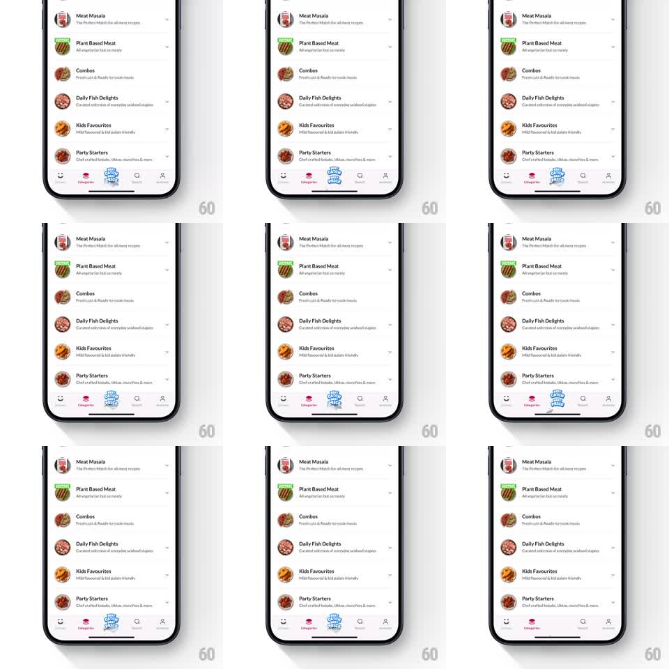

Media
Frame-by-frame

Rebuild this animation 1:1: Licious' campaign tab - the center bottom-tab badge ("Fresh Arrivals") idles with a wiggle-and-pulse loop that pulls the eye without a badge or banner.

Rebuild this animation 1:1: Licious' campaign tab - the center bottom-tab badge ("Fresh Arrivals") idles with a wiggle-and-pulse loop that pulls the eye without a badge or banner.
## Integration
Integration: stack-agnostic spec - springs given as stiffness/damping, timed motions as duration + curve; map every value to your framework and animation library of choice.
## Scene
Category list screen with a bottom tab bar; the center tab is a raised circular campaign badge with an illustrated label, sitting above the bar's baseline.
## Motion spec
Pattern: attention idle loop, ~4s.
- The badge wiggles: rotates +-6deg twice quickly (200ms each, ease-in-out), then snaps level.
- Immediately after, it pulses: scales 1 to 1.12 and back (300ms, ease-out) with a soft ring that expands from its rim and fades (400ms).
- Then it rests for ~2.5s before repeating; the other four tabs never move.
## Calibration
- The wiggle and pulse are one combined beat, then silence - constant motion would train users to ignore it.
- The pulse ring is clipped to nothing: it expands past the badge edge and dissolves.
## Reduced motion
Badge holds static.
## Don't miss
- The badge's label artwork rotates with the badge - no counter-rotation tricks.
- The tab bar layout never shifts; the scale grows around the badge's center, overlapping its neighbors slightly during the pulse.